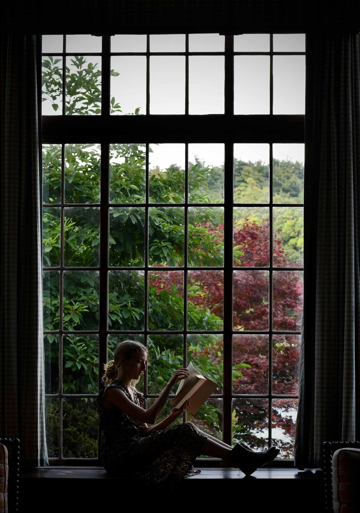
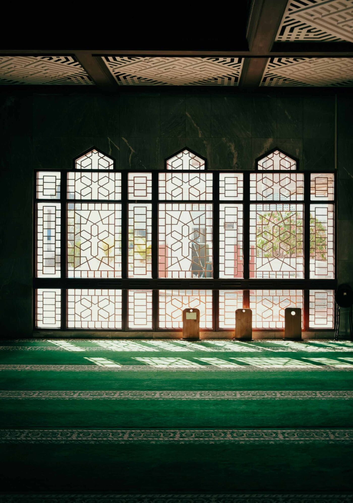
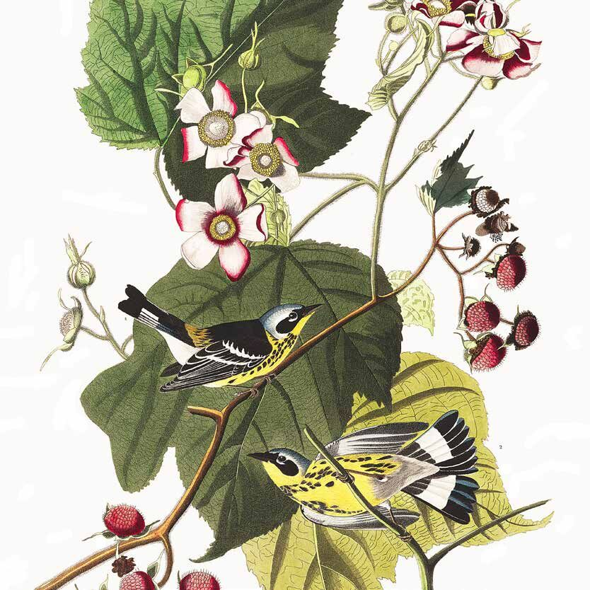
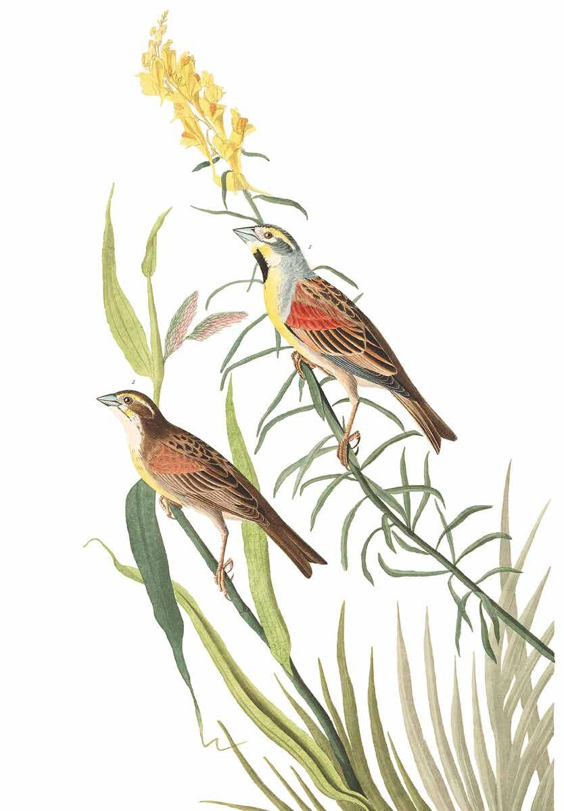
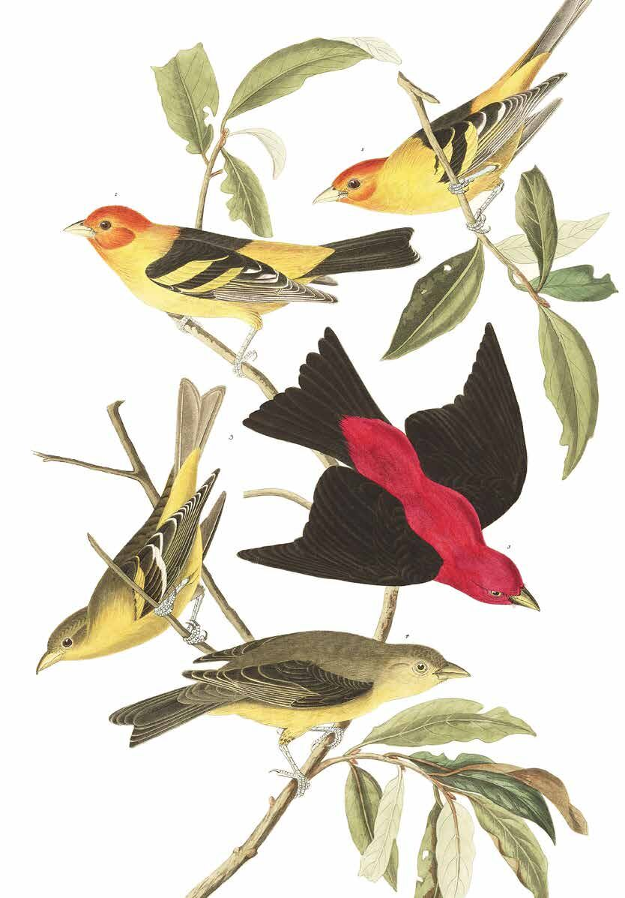
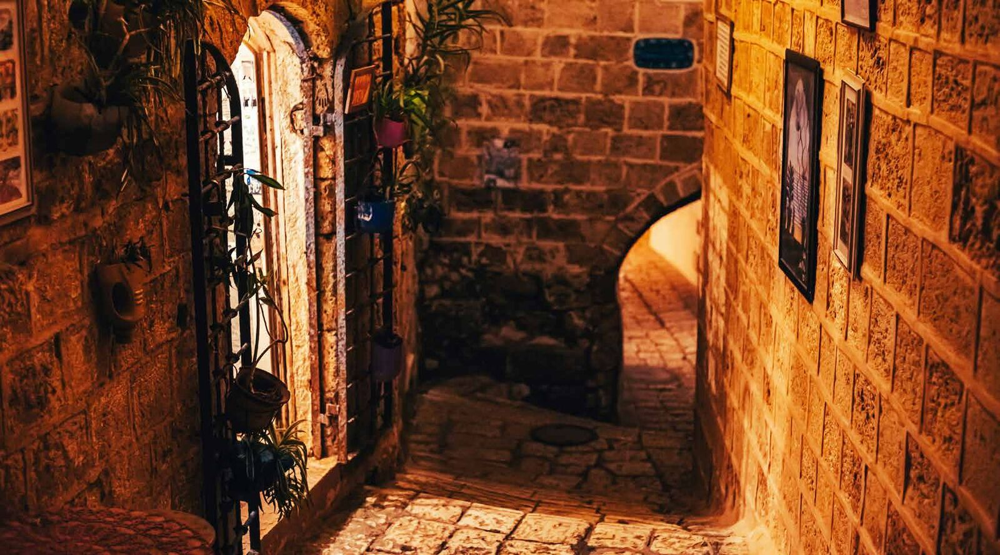

Each issue of Perspective begins with an invitation to a conversation whose shape we cannot fully anticipate. We offer prospective contributors a broad theme and suggest connections with their scholarship or professional practice, leaving room for the questions they themselves find most compelling. Our hope is that readers will encounter in these pages something of the life of our learning community: the variety of its concerns, the breadth of its disciplines, and the unexpected connections that emerge when we attend carefully to one another.
For this issue, that invitation centred on imagination. As contributions arrived, a shared concern began to emerge. Faced with ecological devastation, the expanding influence of artificial intelligence, and uncertainty about our common future, we can struggle to envision possibilities beyond the arrangements we already know. When the present exhausts our sense of what is possible, even conditions we recognize as intolerable can begin to appear inevitable. How might imagination, then, help us recover the capacity to act?
In her exploration of decoloniality as a praxis of resistance, philosopher Catherine Walsh argues that imagination enables us to perceive the world in light of what could be otherwise. It participates in our ability to recognize another person’s suffering, question an inherited assumption, or undertake work whose results we cannot yet see. Before a community can change its practices, it must become possible for its members to picture and be mobilized by a different way of living together. In this sense, imagination belongs within the ordinary work of education, scholarship, faith, and public outreach.
Yet the appeal to imagination raises questions of its own. Our fears are imaginative, too. So are fantasies of limitless growth, technological salvation, and a return to an idealized past. The futures we envision can reproduce the exclusions of the present, especially when we assume that our own hopes speak for everyone. What forms of attention and judgment might help imagination become responsive to the world and accountable to our neighbours? Whose experiences must be heard, and whose memories must unsettle what we find desirable or possible?
Bob Sweetman, ICS’s Emeritus H. Evan Runner Chair in the History of Philosophy, brings these questions into conversation with philosophy’s complicated relationship with imagination. His contribution traces a history in which this capacity has often been met with suspicion or condescension. That inheritance invites us to examine the habits of thought through which we decide what counts as knowledge and what deserves serious consideration. Recovering imagination’s significance requires patient reflection on its capacities, its limits, and its relationship to understanding.
Beth Green, President of ICS, approaches the question through education. Her contribution asks us to consider what happens when preparation for professional and technical competence leaves too little room for the cultivation of imagination. This is a question about the people our educational practices help us become. What opportunities do learners have to question established purposes, encounter unfamiliar perspectives, and envision forms of flourishing beyond the expectations already set before them? Her reflection places the formation of imagination among the responsibilities of educational institutions and the communities they serve.
Jacob Benjamins, CPRSE Postdoctoral Fellow, and David Grills, Junior Member in the PhD program, turn our attention to the imaginative possibilities inherent to biblical interpretation. Their contributions invite us to encounter ancient stories as texts capable of reopening our present. In the lives of biblical characters confronting circumstances that seem to foreclose every future, we discover a challenge to our own habits of resignation. These encounters ask what becomes possible when the apparent limits of a situation cease to determine the limits of our response. They also invite us to consider how reading itself can become an apprenticeship in hope.
Such hope needs care. Nuzhat Khurshid, CPRSE Postdoctoral Fellow, offers a crucial qualification when she insists that imagination must be “nurtured gently and with care for historical injustice.” Her words bring the responsibility of imagining into focus. Any vision of a better future must reckon with the lives and histories that prevailing visions have obscured. The work calls for listening, remembrance, and a willingness to let others transform the possibilities we had imagined for them. It asks who has the freedom to dream, whose dreams receive a hearing, and who bears the costs when powerful people’s dreams become reality.
Read together, these contributions suggest that imagination requires an apprenticeship sustained across disciplines, generations, and communities. We learn through the stories we inhabit, the questions we permit, the people we listen to, and the practices we undertake together. Institutions participate in this formation, too: they can make room for possibilities whose value is not immediately evident and sustain the patient inquiry through which those possibilities become clearer.
This issue of Perspective invites readers into that work. We hope these reflections will deepen the conversation about how imagination is formed, how it can be distorted, and how it might serve a more faithful response to the world. At ICS, these questions belong close to the heart of our shared vocation. A learning community sustains hope when it helps us attend honestly to what is and remain receptive to what might yet be.

Imagination
Beth Green
Imagination & Pedagogy
“The chance you had is the life you’ve got. . . You mustn’t want to be somebody else. What you must do is this: ‘Rejoice evermore. Pray without ceasing. In everything give thanks’. I am not all the way capable of so much, but those are the right instructions.”
In Wendell Berry’s seventh novel, the narrator and protagonist, Hannah Coulter, twice widowed and elderly, looks back over her life in the fictional community of Port William, set in Kentucky. Hannah’s instruction that we should not wish to be somebody else is a curious one when set against the imagination of contemporary Western culture. In 2026, we are invited to choose different lives all the time. If you don’t like your life, you can change it, as evidenced by makeovers, fixer-uppers, and training courses. In fact, education is seen as the key to social mobility and reinvention. Is Hannah just being a fatalist? I would argue quite the opposite. Underlying Hannah’s reflection is a deeply Christian imagination of the purpose for which creation was made and of how to live well in community.
I was that kid with the vivid imagination, nose in a book, armchair travelling through time, space, and fictional universes. I wanted to experience all kinds of different lives, but vicariously, from the safety of my family home. My favourite spot was sitting on the windowsill in my bedroom, behind the curtain, telling stories to myself out loud. What if I could be an actor, airline steward, Queen Elizabeth I, or a teacher? These were just some of the career options I obsessed over as a child. I could imagine them all because I had been to a play, flown in a plane, had a history of Queen Elizabeth on audiobook, and was surrounded by teachers. Both my parents were teachers; the parents of my friends were teachers; in fact, my friends’ parents were my teachers in Sunday school and at the Christian schools I attended in the UK.
Kathy Sylva’s pioneering work in early childhood education demonstrated, using longitudinal studies and large randomized controlled trials, that children who have books read to them and whose parents are engaged in their learning before they attend formal school achieve higher educational outcomes on average in areas such as literacy, numeracy, metacognition, and social behaviour (Sylva et al., 2010). There seems to be some truth to the adage that “you need to see it to be it.” Children raised in more vulnerable contexts, such as poverty or conflict, realize these educational benefits later, if at all. It is not because they lack imagination, but because the options set before them are limited and the barriers they have to cross to see other possibilities are far higher than anything I ever had to overcome.
It is important not to confuse the term “imagination” with “fiction” or “wish fulfilment.” All of us work with images or ideas of what the world is like, what constitutes a meaningful existence, or what a good life is. These were imprinted on us through such experiences as family life, political context, geographic location, and religious formation long before we ever articulated questions for ourselves like: What do I want to be when I grow up? Or: What is true, good, and beautiful? They govern many of our assumptions about how our lives together work. Charles Taylor calls this web of formative experiences, influences, and connections a social imaginary (Taylor, 2004).
In Teaching and Christian Imagination, David Smith and Susan Felch (2016) use the metaphors of pilgrimage, garden, and building to invite teachers to imagine the classroom afresh. Drawing on the image of the garden in the book of Genesis as a place of God’s presence, Smith and Felch invite teachers “to take a deep breath, slow down and allow your weary soul to recover” (p. 1). That’s an important invitation to our culture as well as our classrooms, and it is also what Berry is asking the reader to do as he draws us into the imagined story of Port William.
This leads me to a question I have wondered about throughout my teaching career. Why is it that teachers are tired and students anxious? Why is it that creation groans and the garden is full of weeds and stony soil?
Readers of Berry’s novels will know that Port William is far from a utopia. Berry imagines a community living in the midst of broken relationships, economic decline, the loss of their agrarian way of life, sickness, and aging. In this, he firmly faces the consequences of real life in post-war North America, exposing the lie that we can all be famous and prosperous and eternally young. Berry wrote that, in imagining Port William, “I have learned to see my native landscape and neighbourhood as a place unique in the world, a work of God, possessed of an inherent sanctity that mocks any human valuation that can be put upon it” (Berry, 2010, p. 15). Like Berry, Smith, and Felch, I believe that we need to recover a different story—or imagination—about what education is for. I write about this more extensively in a forthcoming contribution to Beyond School Choice: Essentials for the Future of Education (Green, in press). Put simply, because we have prioritized the story that education is for getting a job, we have valued a narrow set of economic outcomes, prioritizing individual attainment and career success. This is the imagination that underpins our contemporary preoccupation with fame, prosperity, and youth. It leaves young people without a coping strategy when life does not measure up, and it sells so dreadfully short the beauty of place, ordinary work, and faithfulness in community.
Changing the whole system of education might feel like too big a problem to tackle outright, but there is plenty that can be done to recruit the imagination of students within a single classroom. Those small changes can have a meaningful impact. I discovered this as part of a research team led by Trevor Cooling, when we explored the effects of a Christian approach to teaching and learning called What If Learning (Cooling & Green, 2015). What If Learning is a pedagogy project designed by David Smith. The approach helps teachers to connect Christian imagination to teaching and learning using three strategies: seeing anew, choosing engagement, and reshaping practice.
Seeing anew refers to reframing the topic or learning activity in a new way, through the lens of faith, hope, and love. For example, a math lesson about percentages might become an opportunity to consider fair trade practices and other ways of profit-sharing. Choosing engagement encourages teachers to plan how students will actively participate in this reframing through the learning activities of the class. For example, will they be encouraged to engage in a meaningful project in their neighbourhood? Reshaping practice puts the focus on what teachers do: the routines and habits in the classroom that powerfully communicate the story about what education is for. How are the learning spaces arranged in this classroom, and what might they reinforce about collaboration over individual learning? The What If Learning website is full of examples of real lessons where Christian teachers, in non-government-funded and government-funded schools in North America, the UK, and Australia, used these strategies to change their teaching.
Cooling led a two-year follow-up investigation in which he evaluated the experience of fourteen high school teachers working in the UK with What If Learning (Cooling et al., 2016). He found that, for many of the teachers, this was the first time they had been asked to consider that the curriculum they were teaching might connect to the Christian story. In other words, the dominant imagination was that they must teach to the test, enable students to master particular competencies, and meet certain standards in literacy and numeracy so that they could get a job when they left school. Three simple strategies—seeing anew, choosing engagement and reshaping practice—changed what teachers imagined they were doing.
“Rejoice evermore. Pray without ceasing. In everything give thanks” are also a set of imaginative practices. But giving thanks in everything would be a very hollow practice indeed if rooted, for example, in what Kristin Kobes Du Mez has recently described as “the power of positive thinking” (2026). Pollyannaish “count your blessings” literature for girls gets a bad rap in Kobes Du Mez’s Live Laugh Love. Among the books I read and loved as a child was Little House on the Prairie. In her history of white women and evangelicalism, Kobes Du Mez, ICS Distinguished Associate and professor of history and gender studies at Calvin University, carefully chronicles the origins of positive thinking and pyramid selling, their interaction with the holiness movement, and their influence on evangelical culture in the United States, particularly their impact on white women.
Hannah Coulter cites three practices of imagination from the apostle Paul’s first letter to the Thessalonians (1 Thess. 5:16–18). The sequence “rejoice, pray, and give thanks” sits in Paul’s final benediction, exhorting a set of deeply communal practices that I believe Hannah, or Berry, is evoking rather than positive thinking. These practices include respect, peacemaking, admonishment of the idle, encouragement, patience, and prayer.
The Thessalonian community was divided on theological matters. They were anxious about what would happen to believers who had died before Christ returned; rumours were circulating that Jesus had already come back and they had missed the day of the Lord; and some were so convinced that Christ’s return was imminent that they chose not to work, opting out of the very kinds of engagement that would have supported the struggling church. To a community disagreeing about eschatology, Paul writes to emphasize encouragement, ethical behaviour, and hope. This is the imagination that shores up the Christian faith amidst competing and destructive stories about what life and education are for.
Hannah knew that, and she leaned towards it, grasping for this vision even if she wasn’t fully capable of it. These are practices that you can start again when you fail, get better at, and grow in. This is an imagination within which you can truly learn.
References
Berry, W. (2005). Hannah Coulter. Counterpoint.
Berry, W. (2010). Imagination in place. Counterpoint.
Cooling, T., & Green, E. (2015). Competing imaginations for teaching and learning: The findings of research into a Christian approach to teaching and learning called What If Learning. International Journal of Christianity & Education, 19(2), 96–107. https://doi.org/10.1177/2056997115583432
Cooling, T., Green, B., Morris, A., & Revell, L. (2016). Christian faith in English church schools: Research conversations with classroom teachers. Peter Lang.
Du Mez, K. K. (2026). Live laugh love: The secret history of White Christian women and the world they made. Liveright.
Green, B. (in press). Which education story will we choose? In L. E. Swaner & J. DeJong Van Hof (Eds.), Beyond school choice: Essentials for the future of education (pp. 56–70). Cardus.
Smith, D. I., & Felch, S. M. (2016). Teaching and Christian imagination. Eerdmans.
Sylva, K., Melhuish, E., Sammons, P., Siraj-Blatchford, I., & Taggart, B. (Eds.). (2010). Early childhood matters: Evidence from the Effective Pre-school and Primary Education project. Routledge.
Taylor, C. (2004). Modern social imaginaries. Duke University Press.
Imagination in the History of Philosophy and in Our Ordinary Living
In the history of philosophy, imagination is already at play in its earliest chapters. For a philosopher like Aristotle, imagination was closely tied to our capacity to sense the world through our eyes and ears, our nose, tongue, and skin. Imagination was crucial to our capacity to organize the impressions provided by our external senses into unified shapes and patterns, phantasms he called them, shapings of our inner awareness that made for a working sense of what we are encountering by which to respond intentionally and sensibly to our world. Phantasms, when fused to the emotions they gave rise to, became memorable and so could be recalled at later times in response to new stimuli. The path of recollection was analogical: “New experience ‘x’ is like remembered experience ‘y’ in respect of ‘a’ and ‘b’ which suggests ‘z’ as a proper response.”
Imaginative phantasms were, as noted, thought to provide a working sense of things, a construal, we could say. The same experience could be construed in other ways; Aristotle saw imagination making sense on the surface of things but unable to penetrate to the depths where, in his view, things appeared as they were in themselves. Multiple imaginative construals could then coexist without contradiction. Indeed, for Aristotle, it was precisely this multiplying dynamic at play in imaginative sense-making that suggested our capacity to make art. The poet, that is, the artist, moved past the actual world of our individual and communal existence and its potencies to explore possible worlds that mirror the actual world, moving us deeper into its mysteries.
Ancients like Aristotle positioned imaginative sense-making within the world of matter, which marked bodily living and imaginative sensing with its own incompletion. That imperfection went all the way down, so to speak, ever impeding human access to secure understanding and the wisdom it makes possible, ever suffusing the human story and destiny with an aura of tragedy, rendering human life catastrophic, fated to repeat itself world without end. Of course, ancient Greeks saw a counterpoint to matter’s ever-repeated challenge. There was more to existence than matter and its Sisyphean effects on our world. There was also form that grounds the shapes and relations we discover in the world we receive through our external senses, form that grounds the phantasms we imagine and respond to. We humans are made with a form-spotting capacity, nous or mind, that can be trained to sink past the surface of things into the depths where, as noted, things appear at last as they really are, giving us access, if only in principle, to secure knowledge to the world as it really is.
Reformational scholars have been consistent in criticizing this bifurcated creation as construed by the ancient Greek philosophers and their intellectual progeny. Should we, like the ancient Greek philosophers, posit a structural imperfection native to the creation and its creatures? Is such a view faithful to the Good News that begins with a divine judgment God never takes back even in the face of human depravity: “And God saw that it was very good”? Don’t we need to construe the sense we make of God’s creation differently than did the ancient philosophers? Yes and no (typical Bob Sweetman response). You see, I am convinced that if some philosophical construal grasps something true to the world, something implicit in the divine invitations to exist (Let there be . . .), any philosopher will see it and name it, though it will bear different names and be positioned in thought in different places depending on the individual philosopher or communal philosophical tradition in which that philosopher participates. So, the question becomes: What has an ancient Greek like Aristotle seen in his construal of the creation in terms of the correlation he sees between form that shapes a world of sense and matter that both receives and escapes form’s shaping? What has he seen in his accounting for imagination and its sense-making in general and poetizing in and through art-making, in particular?
Philosophy, in the telling of Reformational philosophers, is a theoretical consideration of the world of creatures and its/their meaning in relation to their/its Creator or some pretender. As such, it has a central role in furthering a human community’s schooled understanding of how the meaning of the world and its creatures hang together. Moreover, as a theoretical consideration, philosophy relies on the logical dimension at play in any and all creaturely realities. This aspect suffuses our ability to knowingly distinguish and then relate one kind of thing and another. When we think about the world in a logically primed way, we explore a certain logical orderliness in the world—God’s world we can say with tongues of faith. But the sorts of connections one is gifted to apprehend in God’s world are not exhausted by what is available to us via its and our logical orderliness. There is a faith apprehension we exercise, for example, when we know in our bones that this child born to us at 3:58 a.m. is God’s gift to us. There is political, social, economic apprehension as well: an eye for justice, and eye for how to be-together, and eye for provisioning all their daily bread.
Calvin Seerveld spent his years at ICS exploring aesthetic apprehension. Such apprehension, in his telling, enables human playfulness in living and working, by which we approach things obliquely so as to surprise meaning from connections in the world of creatures otherwise invisible to us. Think of the fashioning of comic gargoyles placed in cathedrals of prayer and worship where no one can see them, or the artful progress of laundry on a clothesline from the very largest items to the smallest without visual interruption. Seerveld named this capacity allusivity. Allusivity, he insisted, marked the aesthetic dimension or aspect of creaturely existence everywhere present and operative. The aesthetically primed human eye for these hidden connections and how to play with them, he called imaginativity. Different names and a different positioning within the meaning of the philosophical whole, to be sure, but is it only I that can see the continuity as well? Imagination in both lies close to and depends upon the perceptual and biological aspects of human living and acting, allowing for human sense-making that expands our apprehensive reach beyond what is available to our theoretical consideration. Moreover, the fecundity of imagination in both allows room for a playful response to the world in which we move beyond the logical orderliness we are so blessed by to play with what is yet possible beyond its strictures. In the ancient philosophy of Aristotle that playfulness is enabled by lack, the incompleteness and imperfection constitutive of matter, whereas in Seerveld’s Reformational thinking, it is enabled by the excess of meaning and possibility of God’s good creation, itself a response to the excess of the Creator with respect to the creation. Playfulness and imagination just go together and are ubiquitous possibilities in human living by which we are enabled to look past the limits of established order when that is necessary and bring to the surface something of the excess of the Creator’s generous provision of his creatures whether in the artist’s play with paint and canvas, words or marble, or in the artfulness of an aged oma arranging the family wash on the line. Thanks be to God, I am minded to say.

Nuzhat Khurshid
Feminism, Faith, and Political Imagination
Political imagination envisions a more just future. This essay explores how faith, feminist thought, and the Islamic tradition can challenge frameworks, confront historical injustices, and foster visions through humility and dialogue.
Various authors have written on the complexities and importance of political imagination. Indeed, idealism, or the ability to imagine a better world, is what drives philosophers from Plato and al-Fārābī onward. Today, I am most inspired by the political imagination of feminist thinkers who argue for the equal applicability of political ideals such as freedom and autonomy to the other half of the population. According to bell hooks, “To be truly visionary we have to root our imagination in our concrete reality while simultaneously imagining possibilities beyond that reality.” This tension between what is possible and what can be imagined must be navigated carefully, and faces two particularly egregious challenges.
First, we live in a neoliberal age in which capitalism and politics work hand in hand to ensure that any notion of political or social good does not succeed in dismantling their hierarchy. Through the promise of individual wealth and material happiness, citizens can be incentivized to forgo abstract ideals for immediate gain. The erosion of community through the prioritization of individual market logic over collective social bonds also negates any kind of shared alternative horizon. By emphasizing privatization, deregulation, and individual responsibility, it reshapes how people interact and rely on one another as part of social communities or political states.
Moreover, political imagination must be nurtured gently and with care for historical injustice. Legacies of colonialism and cultural and political degradation can make it difficult to embrace ideals—oppressors, too, have often used these ideals to justify dehumanization based on race, gender, religion, culture, or other aspects of identity. Frantz Fanon explained how the wounds of colonialism can foreclose actual and imagined future possibilities. We need to share past pain and listen to others before embarking on shared visions for the future, acknowledging both our complicity in oppressive structures and the courage it takes to face traumatic memories at the individual and collective levels.
I think faith can go a long way in laying a foundation for a hopeful future. What can religion add to politics to rectify past errors and unite people from vastly different backgrounds and experiences? I believe a consideration of faith can help political theory where it has failed to imagine a different kind of life—one that prioritizes collective good and humility. From the English Civil War to the Enlightenment, the French Revolution and other major events, the history of Western political theory has championed individual rationality and liberty against the tyranny of religion and monarchy. By retrieving aspects of spirituality that were abandoned in the Western political tradition, there is potential to reinvigorate political imagination beyond the dominant liberal tradition by recovering values of intersubjectivity and community.
But can faith resist the challenges stated above by helping to heal past wounds and pushing back against the political and economic status quo? That is the crucial question I think all believers should be thinking about. Religion is not immune from co-optation by various ideologies, as is evident in fundamentalism and the politicization of religion all over the globe. We must not let faith deter us from critical questioning and from dialogue with those who appear different. This can take a lot of courage and involves resistance of dogma and dehumanization everywhere.
As part of my research, I hope to elucidate universal elements of feminist agency within the Islamic tradition. I argue that an exclusive focus on Muslim women’s difference and exceptionality from theoretical debates on feminism takes away from their religious identities and deems them incapable of resistance to structures of domination at the individual, social, and political levels. Drawing on qualitative data, philosophical works, and creative works, I hope to build a theoretical and qualitative grounding for a feminist ethic espoused by Muslim women that is not based on difference and that can speak to universal themes such as feminism, rationality, and socialism. Bringing it back to feminist visions of political imagination, it takes fortitude to be visionary when we are firmly rooted in our embodied existence, traditions, and sociopolitical structures. Feminists remind us that theory without practice is conceit, and accountability is key to ethical research. They also remind us that the personal is always political, even if it is dismissed as subjective or part of the private sphere; imagination must take seriously the current political landscape and its material limitations and possibilities. Faith can give us theoretical tools to look beyond dominant liberal frameworks and imagine a different future, but only if we use it to interrogate parochial perspectives and to reach shared visions through humility and dialogue.
Jacob Benjamins
Imagining the Kingdom
Jesus tells us to look at the birds and flowers and stop worrying, which can sound naïve. Three readings suggest it is an invitation rather than a dismissal.

Matthew 6:25–34 is a confusing passage. Jesus tells his listeners not to worry about how much money they have, their aging bodies, or what they eat or wear, and then suggests that looking at birds and flowers can somehow help. For a teacher normally portrayed as being concerned with the material conditions of the poor, Jesus’ advice has the potential to appear idealistic and even a bit naïve. Every starving sparrow suggests that there are plenty of reasons to worry (Edwards, 2006).
But in my view, Jesus is not advocating blind optimism or telling people to overlook the legitimate reasons for anxiety and worry. Like most of his teachings on the kingdom of God, Jesus presents his listeners with a counterintuitive image that is meant to open rather than foreclose further discussion. In this instance, the birds and the flowers symbolize the enduring value and goodness of creation, which invite different responses and different ways of imagining the kingdom.
Margaret Renkl, for example, vividly portrays one encounter with the birds and flowers through a short reflection on grief in “After the Fall.” She begins by describing grief as something “you inhabit like skin” and “see through” everywhere you go, but also something that might transform or shift over time. She then writes:
Time claims you: your belly softens, your hair grays, the skin on the top of your hand goes loose as a grandmother’s, and the skin of your grief, too, will loosen, soften, forgive your sharp edges, drape your hard bones.
You are waking into a new shape. You are waking into an old self.
What I mean is, time offers your old self a new shape.
What I mean is, you are the old, ungrieving you, and you are also the new, ruined you.
You are both, and you will always be both.
There is nothing to fear. There is nothing to fear. Walk out into the springtime, and look: the birds welcome you with a chorus. The flowers turn their faces to your face. The last of last year’s leaves, still damp in the shadows, smell ripe and faintly fall. (Renkl, 2019, p. 218)
In Renkl’s reading of Matthew 6, the birds and flowers in springtime become a source of courage and hope. Their presence marks the passing of the seasons and the potential for grief to slowly take on a “new shape.”
Mary Oliver’s “Consider other kingdoms” approaches Christ’s imperative to consider the birds and flowers from a different starting point. She writes:
Consider the other kingdoms. The trees, for example, with their mellow-sounding titles: oak, aspen, willow. Or the snow, for which the peoples of the north have dozens of words to describe its different arrivals. Or the creatures, with their thick fur, their shy and wordless gaze. Their infallible sense of what their lives are meant to be. Thus the world grows rich, grows wild, and you too, grow rich, grow sweetly wild, as you too were born to be. (Oliver, 2008, p. 25)
By considering “other kingdoms,” Oliver lets herself be affected by the “mellow-sounding” oak and those creatures who have an “infallible sense of what their lives are meant to be.” Observing “other kingdoms” infuses Oliver’s living present to the point where she is untroubled by the past and future, finding rest in the idea that “you too, // grow rich, grow sweetly wild, as you too // were born to be.”

And Søren Kierkegaard provides one of my favourite readings of the text. He suggests that the birds and the flowers “signify to you that you are before God, so that you remember that you are before God—so that you also might earnestly and in truth become silent before God” (Kierkegaard, 1849/2016, pp. 30–31). In Kierkegaard’s reading, the birds and flowers present a contrast to the endless internal scripts that run through our minds—our needling insecurities and anxieties, questions about whether we add up or whether we are loved, respected, or taken seriously enough (Kierkegaard, 1849/2016, pp. 31–32). The birds and the flowers are blissfully unaware of these questions and, like all of creation, simply have a value and a worth that is given to them.

Each of these three readings imaginatively encounters Jesus’ teaching on birds and flowers differently. These differences do not reduce the meaning of the “kingdom” to the impulses of the reader, but suggest that the birds and the flowers are an open-ended affirmation of creation that we might variously live into over the course of our lives.
References
Edwards, D. (2006). Every sparrow that falls to the ground: The cost of evolution and the Christ-event. Ecotheology, 11(1), 103–123. https://doi.org/10.1558/ecot.2006.11.1.103
Kierkegaard, S. (2016). The lily of the field and the bird of the air: Three godly discourses (B. H. Kirmmse, Trans.). Princeton University Press. (Original work published 1849)
Oliver, M. (2008). The Truro bear and other adventures: Poems and essays. Beacon Press.
Renkl, M. (2019). Late migrations: A natural history of love and loss. Milkweed Editions.

David Grills
Finding Wonder on the Side Streets of Biblical Narrative
By following unexpected threads, asking better questions, and reading Scripture as literature, we can rediscover the wonder of familiar stories and uncover connections that deepen our understanding of the biblical narrative.
Early in my Old Testament Studies course, I ask students, “How many sons did Abraham have?” Some say “many,” echoing the song and the promise behind it; some say two; and others disregard Ishmael and say Abraham had one true son. No one guesses eight: Ishmael, Isaac, and six more through Abraham’s third wife, Keturah. You might be wondering who the sixth son is, and wonder is the point.
Students discover they were confident and wrong, experiencing what researcher Jennifer Charteris (2014) calls an epistemological shudder. It allows learning not just in that moment but over the long term as they develop close reading skills and other tools that reveal what they have been missing. Students gain genuine curiosity and the means to pursue inquiry fruitfully. Curiosity comes from not knowing and from the surprise of the fact.
This works best when the facts are connected to narrative.
So who is the sixth son? Midian, one of the sons who were sent to the east away from Isaac, but whose descendants were there with the Ishmaelites at the cistern that held Joseph and carried him off to slavery in Egypt. Midian becomes home to the refugee Moses for forty years, during which time he marries Zipporah, the daughter of the priest Jethro. Jethro advises Moses during the exodus, but eventually the relationship turns and the Midianites collude with the Moabites to try to lead Israel to ruin.
Curiosity takes us off the main roadways onto significant side streets that give us a different view. My students learn to ask better questions, notice threads that can be pulled, and enjoy Scripture again. You don’t need a classroom for this. All readers will find newness in lesser-known stories that, when taken seriously, help us to understand the overall story of Scripture and leave us wondering what else is in there. Take, for example, the city of Jabesh Gilead.
This city first appears in the tragic story of the Levite and the concubine and the ensuing civil war found in Judges 19–21. After the civil war against Benjamin and its offending population of Gibeah, Israel requires wives for the remaining 600 Benjaminites to rebuild their tribe, but the other tribes had vowed not to give their own daughters in marriage to a Benjaminite. The town of Jabesh Gilead had not sent fighting men to support Israel in the war against Benjamin. The town is destroyed and 400 girls from Jabesh Gilead are given to Benjamin as wives.
Later, in 1 Samuel, Gibeah returns as the hometown of Saul, Israel’s first king. Jabesh Gilead is in trouble once again. This time the Ammonite king Nahash has besieged the city and his price for its surrender is the right eye of every man. The leaders of the city ask for time and it is granted. Saul is full of the Spirit and, in anger, cuts up two oxen and sends their parts throughout the land of Israel to muster men to his aid, much like how the Levite sent a part of his concubine to each tribe back in Judges 19.
Years later, Saul and his son Jonathan lose their lives in a battle with the Philistines. Their bodies are taken and hung on the wall of Beth-shan. Who will retrieve their bodies? The brave men of Jabesh Gilead. During his reign, David sends his blessing to the Jabesh Gilead for this act and then retrieves the bones and buries them at Zela in Benjamin.
Spanning three books and two reigns, the town of Jabesh Gilead is still unknown to most. What also remains unknown, then, are the family connections and what would motivate Saul to go to great lengths to save the city in its time of need.
Following threads wherever they lead is a worthwhile and enjoyable study practice. Study is not the only way to enjoy Scripture, though. In chapter 5 of his book, Enjoying the Bible: Literary Approaches to Loving the Scriptures, Matthew Mullins (2021) suggests that we should read with our guts. Reading the Bible not for what we can extract from it, but as literature, may take us to places we haven’t been before.
For example, in my classroom, we read larger logical sections aloud in order to get a feel for the story. Chapter markings, verse numbers, and headings are ignored and we simply read from the beginning of one logical section to the next. Mullins similarly suggests slowing the reading down to catch the rhythm. Try reading the first four chapters of Mark in one sitting. Listen for how often the word “immediately” appears, and you will begin to feel the beat and the urgency of Jesus’ first announcement: the kingdom of God has come near.
One last thread to follow on your own: Abram and Lot part ways in Genesis 13; Lot is rescued in chapter 14 and again in chapter 19; Jericho falls in Joshua 6 (Matthew 1:5 holds a clue); and then comes the book of Ruth. What does a widow from Moab have to do with Abram’s nephew? Read and see. Wonder waits there, and curiosity will keep calling you back.
References
Charteris, J. (2014). Epistemological shudders as productive aporia: A heuristic for transformative teacher learning. International Journal of Qualitative Methods, 13(1), 104–121. https://doi.org/10.1177/160940691401300102
Mullins, M. (2021). Enjoying the Bible: Literary approaches to loving the Scriptures. Baker Academic.
Institute for Christian Studies 59 St. George Street Toronto ON Canada M5S 2E6